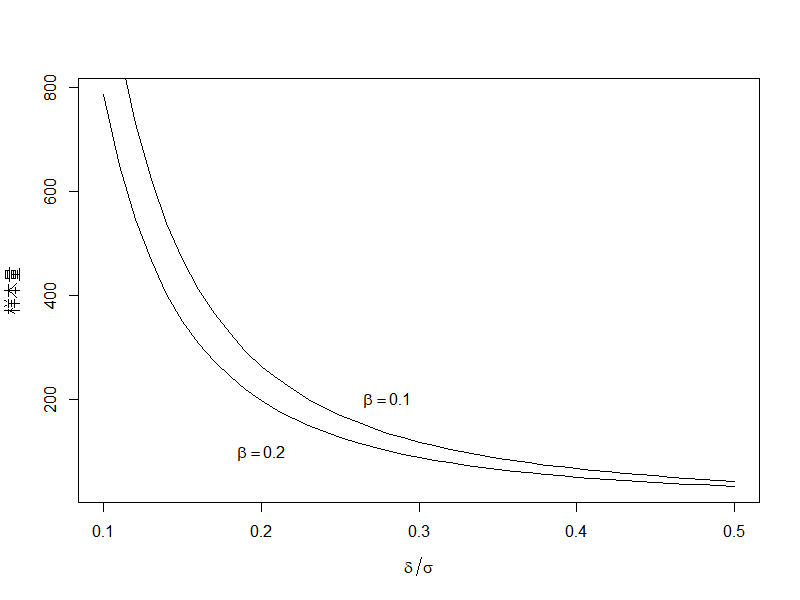
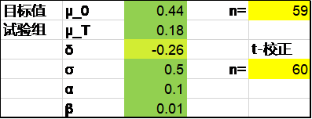
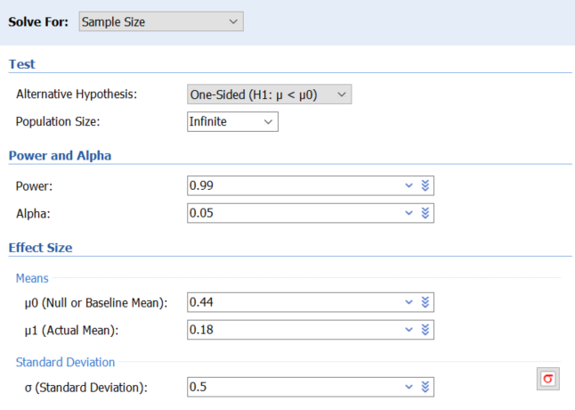
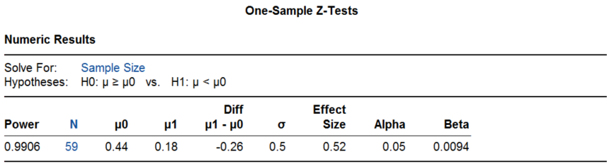
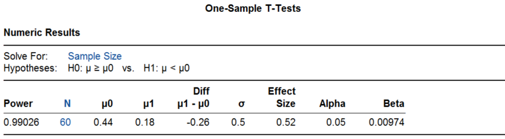

2. 单组均数的样本量计算
单组（arm，在医疗器械临床研究中多翻译为”组”，而在药物临床试验中常翻译成”臂”，如单臂研究）均数的研究包括均数的单组目标值法、单样本均数与总体均数比较以及配对设计等。
单组均数的研究设计在本质上都是单样本均数与总体均数的比较，根据预估的样本均值和设定的总体均值或目标值计算样本量。配对设计时样本量计算的结果为对子数。
单样本均数与总体均数比较的样本量计算公式如下1-4：
公式 1‑1 \(n = \frac{\left( Z_{1 - \alpha/2} + Z_{1 - \beta} \right)^{2}}{{(\frac{\delta}{\sigma})}^{2}}\)
其中\(\delta\)为样本均数与总体均数的差值，即预期值与目标值的差异μT-μ0；\(\sigma\)为总体标准差，Z为设定的概率（如I类错误水平α和II类错误水平β）所对应的标准化正态分布的分位数，大家熟知的α为双侧0.05时，Z(1-0.05/2)=1.96；β为0.2（即检验的效能或把握度为0.8）时，Z(1-0..2)为0.84。从公式可以看出，影响样本量的是样本均数与总体均数的差值以及总体标准差，确切地说样本量与\(\frac{\delta}{\sigma}\)的平方成反比，而与样本均数或总体均数各自的具体数值并不直接相关，这个\(\frac{\delta}{\sigma}\)在样本量计算领域里常成为效应量。单组均数的研究设计通常采用单侧检验，因此一些统计学书刊上的公式表达为\(Z_{1 - \alpha}\)。另外由于对称性，\(Z_{1 - \alpha}\)=\(- Z_{\alpha}\)，平方后两者相等，因而也有些统计书刊直接采用了\(Z_{\alpha}\)或\(Z_{\alpha/2}\)的表达方式。本书的样本量计算统一默认为双侧α=0.05，因此采用了\(Z_{1 - \alpha/2}\)的表达方式，读者在实际应用时应稍加留意。常见的Z值见表 1‑1。
| P | \[Z_{1 - P/2}\] |
|---|---|
| 0.005 | 2.576 |
| 0.01 | 2.326 |
| 0.025 | 1.960 |
| 0.05 | 1.645 |
| 0.1 | 1.282 |
| 0.2 | 0.842 |
公式 1‑1是基于正态分布且总体方差已知情形的推导，亦称Z检验法。对小样本研究或总体方差未知时，宜进行基于t分布的计算，但该法需要进行迭代，无显性公式。好在基于t分布的样本量计算比较稳健，通常在上述公式计算的基础上增加2-3例即可5，或者可应用下列校正公式2：
公式 1‑2 \(n = \frac{\left( Z_{1 - \alpha/2} + Z_{1 - \beta} \right)^{2}}{{(\frac{\delta}{\sigma})}^{2}} + \frac{1}{2}Z_{1 - \alpha/2}^{2}\)
利用R语言计算及作图，可清晰地看到样本量随\(\frac{\delta}{\sigma}\)的增加而迅速减少（图 1‑1，表 1‑2）。

| \[\frac{\delta}{\sigma}\] | α=0.025单侧 | α=0.05单侧 | ||
|---|---|---|---|---|
| β=0.2 | β=0.1 | β=0.2 | β=0.1 | |
| 0.10 | 787 | 1053 | 620 | 858 |
| 0.11 | 651 | 871 | 513 | 710 |
| 0.12 | 547 | 732 | 431 | 597 |
| 0.13 | 467 | 624 | 368 | 509 |
| 0.14 | 403 | 539 | 317 | 439 |
| 0.15 | 351 | 469 | 277 | 382 |
| 0.16 | 309 | 413 | 243 | 336 |
| 0.17 | 274 | 366 | 216 | 298 |
| 0.18 | 245 | 327 | 193 | 266 |
| 0.19 | 220 | 293 | 173 | 239 |
| 0.20 | 199 | 265 | 156 | 216 |
| 0.21 | 180 | 241 | 142 | 196 |
| 0.22 | 165 | 220 | 130 | 179 |
| 0.23 | 151 | 201 | 119 | 164 |
| 0.24 | 139 | 185 | 109 | 151 |
| 0.25 | 128 | 171 | 101 | 139 |
| 0.26 | 119 | 158 | 93 | 129 |
| 0.27 | 110 | 147 | 87 | 119 |
| 0.28 | 103 | 136 | 81 | 111 |
| 0.29 | 96 | 127 | 75 | 104 |
| 0.30 | 90 | 119 | 71 | 97 |
| 0.31 | 84 | 112 | 66 | 91 |
| 0.32 | 79 | 105 | 62 | 86 |
| 0.33 | 75 | 99 | 59 | 81 |
| 0.34 | 70 | 93 | 55 | 76 |
| 0.35 | 67 | 88 | 52 | 72 |
| 0.36 | 63 | 84 | 50 | 68 |
| 0.37 | 60 | 79 | 47 | 64 |
| 0.38 | 57 | 75 | 45 | 61 |
| 0.39 | 54 | 72 | 43 | 58 |
| 0.40 | 52 | 68 | 41 | 55 |
| 0.41 | 49 | 65 | 39 | 53 |
| 0.42 | 47 | 62 | 37 | 50 |
| 0.43 | 45 | 59 | 35 | 48 |
| 0.44 | 43 | 57 | 34 | 46 |
| 0.45 | 41 | 54 | 32 | 44 |
| 0.46 | 40 | 52 | 31 | 42 |
| 0.47 | 38 | 50 | 30 | 41 |
| 0.48 | 37 | 48 | 29 | 39 |
| 0.49 | 35 | 46 | 28 | 38 |
| 0.50 | 34 | 44 | 27 | 36 |
单组目标值法
例 1‑1 PLATINUM QCA研究6评价某冠状动脉支架的临床表现，主要有效性终点为随访9个月时的管腔丢失，目标值0.44mm，预期值0.18±0.50 mm，将其单侧95%置信区间上限与目标值比较，则60例样本可提供99%的检验效能。
该例采用了单侧95%置信区间，相当于双侧α=0.1，因此Excel表里的α填写了0.1，正态近似法的结果为59，t-校正后为60。

PASS软件Z检验法的结果也是59，操作时依次点击Means, One Mean, Z-Test (Inequality), One-Sample Z-Test。


PASS软件t检验的结果同样是60，操作时依次点击Means, One Mean, T-Test (Inequality), One-Sample T-Test。

R语言pwrss包Z检验法的结果为59，t检验法的结果为60。
Z检验法：
library(pwrss)
pwrss.z.mean(mu = 0.18, sd = 0.5, mu0 = 0.44, alpha = 0.1, power = 0.99)
结果输出：
## A Mean against a Constant (z Test)
## H0: mu = mu0
## HA: mu != mu0
## ------------------------------
## Statistical power = 0.99
## n = 59
## ------------------------------
## Alternative = "not equal"
## Non-centrality parameter = -3.971
## Type I error rate = 0.1
## Type II error rate = 0.01t检验法：
library(pwrss)
pwrss.t.mean(mu = 0.18, sd = 0.5, mu0 = 0.44, alpha = 0.1, power = 0.99)
结果输出：
## A Mean against a Constant (t Test)
## H0: mu = mu0
## HA: mu != mu0
## ------------------------------
## Statistical power = 0.99
## n = 60
## ------------------------------
## Alternative = "not equal"
## Non-centrality parameter = -4.028
## Degrees of freedom = 59
## Type I error rate = 0.1
## Type II error rate = 0.01该研究实际入组了100例患者，支架晚期管腔丢失为0.17±0.25 mm，P<0.001，研究达成。
单样本均数与总体均数的比较
例 1‑2 7为了解高海拔作业工人的心率是否高于一般人群，已知标准差为9.9次/分，心率差异5次/分有临床意义，设α=0.05（单侧），β=0.1，则样本量为36。该例声称采用了正态近似校正法。
Excel表t-校正法计算结果为35，PASS软件t检验法的结果为35，R语言pwrss包t检验法结果也是35。
library(pwrss)
pwrss.t.mean(mu = 5, sd = 9.9, mu0 = 0, alpha = 0.1, power = 0.9)
例 1‑3 医学8年制教材《医学统计学》第3版介绍了一个例子8，某医师试验某种升白细胞的疗效，预实验用药前后白细胞差值的标准差为2.5X109/L，要求治疗后白细胞上升1 X109/L为有效，取α=0.05（单侧），β=0.1，则t检验法需56例患者。
Excel表t-校正法计算结果为55，PASS软件t检验法的结果为55，R语言pwrss包t检验法的结果也是55。
library(pwrss)
pwrss.t.mean(mu = 1, sd = 2.5, mu0 = 0, alpha = 0.1, power = 0.9)
配对设计
（同源配对与异源配对，前后配对）
例 1‑4 医学本科教材《医学统计学》第6版介绍了一个例子1，研究维生素E缺乏时对肝中维生素A含量的影响。将大鼠配对后分为两组，分别喂以正常饲料和维生素E缺乏饲料。如果肝中维生素A含量差异为700IU/g时认为有意义，已知标准差为500IU/g，取α=0.05，β=0.05，则需8对大鼠。该例声称采用了正态近似法。
该例按公式1-1计算的实际结果为8.02。Excel表正态近似法计算结果为9，PASS软件Z检验法结果为9，R语言pwrss包Z检验法的结果也是9。
library(pwrss)
pwrss.z.mean(mu = 700, sd = 550, mu0 = 0, alpha = 0.05, power = 0.95)
讨论
R语言pwr包可以做一些基本的样本量计算，如本章例 1‑1，pwr包的正态近似法与t检验法的结果分别为：
library(pwr)
pwr.norm.test(d = (0.18-0.44)/0.5, sig.level = 0.05, power = 0.99,
alternative = "less")
结果输出：
##
## Mean power calculation for normal distribution with known variance
##
## d = -0.52
## n = 58.32264
## sig.level = 0.05
## power = 0.99
## alternative = lesslibrary(pwr)
pwr.t.test(d = (0.18-0.44)/0.5, sig.level = 0.05, power = 0.99,
type = "one.sample", alternative = "less")
结果输出：
##
## One-sample t test power calculation
##
## n = 59.70845
## d = -0.52
## sig.level = 0.05
## power = 0.99
## alternative = less这里的d是Cohen's d，即标准化的效应量，对应的是本章开头部分样本量计算公式里的\(\frac{\delta}{\sigma}\)。
检验效能的计算
本章例 1‑1 PASS软件计算结果里给出了实际的检验效能，比如t检验法样本量60可提供的实际检验效能为0.99026，R语言也可以提供。
library(pwr)
pwr.t.test(d = (0.18-0.44)/0.5, sig.level = 0.05, n = 60,
type = "one.sample", alternative = "less")
结果输出：
##
## One-sample t test power calculation
##
## n = 60
## d = -0.52
## sig.level = 0.05
## power = 0.9902613
## alternative = less或者，
library(pwrss)
pwrss.t.mean(mu = 0.18, sd = 0.5, mu0 = 0.44, alpha = 0.1, n = 60)
结果输出：
## A Mean against a Constant (t Test)
## H0: mu = mu0
## HA: mu != mu0
## ------------------------------
## Statistical power = 0.99
## n = 60
## ------------------------------
## Alternative = "not equal"
## Non-centrality parameter = -4.028
## Degrees of freedom = 59
## Type I error rate = 0.1
## Type II error rate = 0.01自身前后对照
本章例 1‑3是一个自身前后对照的案例，该例在原书中列于样本均数与已知总体均数比较（或配对设计均数比较）之下，也偶有将其归为前后配对的。但需要注意的是在案例的情形下，前后对照并不是一个良好的研究设计，因为治疗以外的因素，比如患者疾病的恢复或进展也会引起前后测量的差异。通常应当再设立一组对照，将治疗组的前后差值与对照组的前后差值进行比较。其实，许多单组目标值设计的研究都存在这个问题，随机对照试验的论证力度显然更强。
目标值的含义
美国食品药品监督管理局（FDA, Food and Drug Administration）2013年发布的《医疗器械关键性临床研究的设计考虑指导原则》9提出了客观性能标准（Objective performance criteria，OPC）和性能目标（Performance goal，PG）两个概念，对OPC的定义是：来自临床研究和/或登记研究历史数据的一个数值指标， FDA可据此对安全性或有效性终点进行二分类（通过／失败）的评价与比较。该指导原则指出OPC通常来自监管机构、专业学会或标准组织等，其证据等级高于PG。但这种分类在临床试验的实践中并没有严格的区分，从统计学角度来看这两者用于样本量计算时没有任何差异。另外，该指导原则将单组目标值法限定在了二分类数据。
我国国家药品监督管理局（药监局）2018年发布的《医疗器械临床试验设计指导原则》10指出目标值是专业领域内公认的某类医疗器械的有效性/安全性评价指标所应达到的最低标准，在分类上沿用了FDA的观点，包括客观性能标准和性能目标两种。
国内临床研究实践中常将OPC和PG通称为目标值，不再细分。中国临床试验生物统计学组2017年发表的《单组目标值临床试验的统计学考虑》11认为目标值是指专业领域内公认的某医疗器械的有效性／安全性／性能评价指标所应达到的标准。
以上这些目标值的定义都值得商榷。FDA的定义描述了目标值的功用，但避开了说明这个数值指标是什么。这个数值指标具体是什么确实不容易说清楚，中国临床试验生物统计学组定义的”应达到的标准”似不够准确，而药监局的定义认为是”最低标准”，实际上当单组研究的结果正好达到该数值时，研究肯定是无法通过假设检验的。我们以高优指标（数值越大越好，比如成功率）为例说明，单组目标值法要求研究结果的双侧95%置信区间的下限（或者单侧97.5%置信区间下限）大于该目标值，所以研究结果正好为目标值时，其置信区间的下限就小于目标值了，研究无法通过，除非样本量为无穷大。因此临床医生有时候会感觉研究设定的目标值太低了，比如2017年美国心律协会等学会发布的《心房颤动导管和外科消融专家共识》12建议阵发性房颤导管消融一年成功率的目标值为50%，持续性房颤为40%，其实是要求研究结果的置信区间的下限高于这个值。从单组目标值法样本量计算公式来看，期望值与目标值差异越大，所需样本量越小；如果想以接近目标值的较低的成功率通过检验，需要的样本量是巨大的。
设置一个较低的目标值和一个较高的期望值有助于减少样本量，但前者需要有临床意义，后者应考虑研究达成的可能性。我们将在下一章讨论目标值的制定。
References:
1. 李康, 贺佳. 医学统计学. 6版 ed. 北京: 人民卫生出版社; 2013.
2. 颜艳, 王彤. 医学统计学. 5版 ed. 北京: 人民卫生出版社; 2020.
3. 李卫. 医疗器械临床试验统计方法. 2版 ed. 北京: 科学出版社; 2016.
4. Chow S, Shao J, Wang H, Lokhnygina Y. Sample Size Calculations in Clinical Research. Third Edition ed: CRC Press; 2018.
5. 陈峰. 医学统计学. 4版 ed. 北京: 人民卫生出版社; 2024.
6. Meredith IT, Whitbourn R, Scott D, et al. PLATINUM QCA: a prospective, multicentre study assessing clinical, angiographic, and intravascular ultrasound outcomes with the novel platinum chromium thin-strut PROMUS Element everolimus-eluting stent in de novo coronary stenoses. EUROINTERVENTION 2011;7:84-90.
7. 杨土保. 医学科学研究与设计. 2版 ed. 北京: 人民卫生出版社; 2013.
8. 颜虹, 徐勇勇. 医学统计学. 3版 ed. 北京: 人民卫生出版社; 2015.
9. FDA. Design Considerations for Pivotal Clinical Investigations for Medical Devices Guidance for Industry, Clinical Investigators, Institutional Review Boards and Food and Drug Administration Staff; 2013.
10. 国家药品监督管理局. 医疗器械临床试验设计指导原则; 2018.
11. 李卫, 赵耐青. 单组目标值临床试验的统计学考虑. 中国卫生统计 2017;34:505-8.
12. Calkins H, Hindricks G, Cappato R, et al. 2017 HRS/EHRA/ECAS/APHRS/SOLAECE expert consensus statement on catheter and surgical ablation of atrial fibrillation: Executive summary. HEART RHYTHM 2017;14:e445-94.